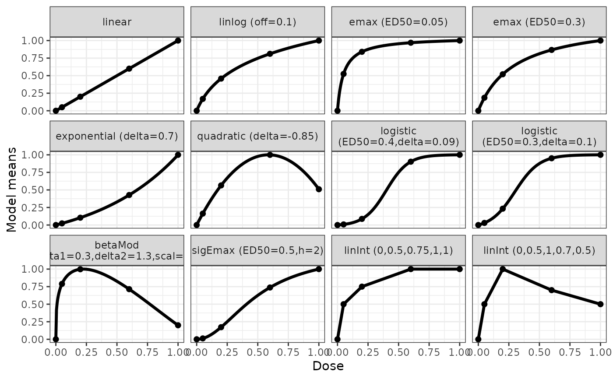
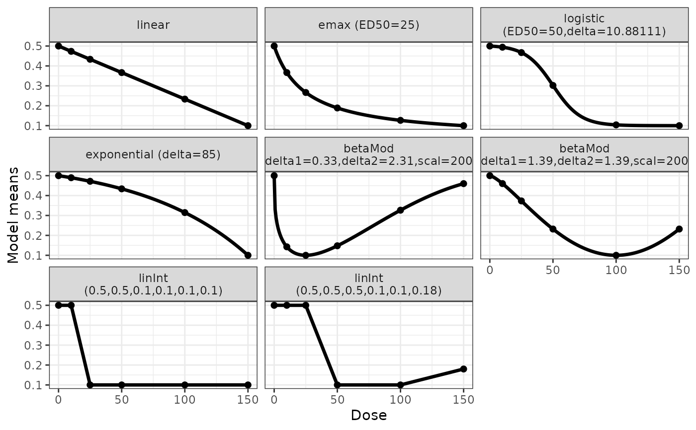

The Mods functions allows to define a set of dose-response models. The function is used as input object for a number of other different functions.
Usage
Mods(
...,
doses,
placEff = 0,
maxEff,
direction = c("increasing", "decreasing"),
addArgs = NULL,
fullMod = FALSE
)
getResp(fmodels, doses)
plotMods(
ModsObj,
nPoints = 200,
superpose = FALSE,
xlab = "Dose",
ylab = "Model means",
modNams = NULL,
trafo = function(x) x
)
# S3 method for class 'Mods'
plot(
x,
nPoints = 200,
superpose = FALSE,
xlab = "Dose",
ylab = "Model means",
modNams = NULL,
plotTD = FALSE,
Delta,
...
)Arguments
- ...
In function Mods:
Dose-response model names with parameter values specifying the guesstimates for the \(\theta_2\) parameters. Seedrmodelsfor a complete list of dose-response models implemented. See below for an example specification.
In function plot.Mods:
Additional arguments to the xyplot call.- doses
Dose levels to be used, this needs to include placebo.
- placEff, maxEff
Specify used placebo effect and the maximum effect over placebo. Either a numeric vector of the same size as the number of candidate models or of length one.
When these parameters are not specified placEff = 0 is assumed, for maxEff = 1 is assumed, if direction = "increasing" and maxEff = -1 is assumed, for direction = "decreasing".- direction
Character determining whether the beneficial direction is increasing or decreasing with increasing dose levels. This argument is ignored if maxEff is specified.
- addArgs
List containing two entries named "scal" and "off" for the "betaMod" and "linlog". When addArgs is NULL the following defaults are used list(scal = 1.2*max(doses), off = 0.01*max(doses), nodes = doses).
- fullMod
Logical determining, whether the model parameters specified in the Mods function (via the ... argument) should be interpreted as standardized or the full model parameters.
- fmodels
An object of class Mods
- ModsObj
For function plotMods the ModsObj should contain an object of class Mods.
- nPoints
Number of points for plotting
- superpose
Logical determining, whether model plots should be superposed
- xlab, ylab
Label for y-axis and x-axis.
- modNams
When modNams == NULL, the names for the panels are determined by the underlying model functions, otherwise the contents of modNams are used.
- trafo
For function plotMods there is the option to plot the candidate model set on a transformed scale (e.g. probability scale if the candidate models are formulated on log-odds scale). The default for trafo is the identity function.
- x
Object of class Mods with type Mods
- plotTD
plotTD is a logical determining, whether the TD should be plotted. Delta is the target effect to estimate for the TD.
- Delta
Delta: The target effect size use for the target dose (TD) (Delta should be > 0).
Value
Returns an object of class "Mods". The object contains the specified model parameter values and the derived linear parameters (based on "placEff" and "maxEff") in a list.
Details
The dose-response models used in this package (see drmodels for details) are of form
$$f(d) = \theta_0+\theta_1 f^0(d,\theta_2)$$
where the parameter \(\theta_2\) is the only non-linear parameter and can be one- or two-dimensional, depending on the used model.
One needs to hand over the effect at placebo and the maximum effect in the dose range, from which
\(\theta_0,\theta_1\) are then back-calculated, the output object is of class "Mods". This
object can form the input for other functions to extract the mean response (getResp) or target doses
(TD and ED) corresponding to the models. It is also needed as input to the functions
powMCT, optDesign
Some models, for example the beta model (scal) and the linlog model (off) have parameters that are not estimated from the data, they need to be specified via the addArgs argument.
The default plot method for Mods objects is based on a plot using the lattice package for backward compatibility. The function plotMods function implements a plot using the ggplot2 package.
NOTE: If a decreasing effect is beneficial for the considered response variable it needs to specified here, either by using direction = "decreasing" or by specifying a negative "maxEff" argument.
References
Pinheiro, J. C., Bornkamp, B., and Bretz, F. (2006). Design and analysis of dose finding studies combining multiple comparisons and modeling procedures, Journal of Biopharmaceutical Statistics, 16, 639–656
Examples
## Example on how to specify candidate models
## Suppose one would like to use the following models with the specified
## guesstimates for theta2, in a situation where the doses to be used are
## 0, 0.05, 0.2, 0.6, 1
## Model guesstimate(s) for theta2 parameter(s) (name)
## linear -
## linear in log -
## Emax 0.05 (ED50)
## Emax 0.3 (ED50)
## exponential 0.7 (delta)
## quadratic -0.85 (delta)
## logistic 0.4 0.09 (ED50, delta)
## logistic 0.3 0.1 (ED50, delta)
## betaMod 0.3 1.3 (delta1, delta2)
## sigmoid Emax 0.5 2 (ED50, h)
## linInt 0.5 0.75 1 1 (perc of max-effect at doses)
## linInt 0.5 1 0.7 0.5 (perc of max-effect at doses)
## for the linInt model one specifies the effect over placebo for
## each active dose.
## The fixed "scal" parameter of the betaMod is set to 1.2
## The fixed "off" parameter of the linlog is set to 0.1
## These (standardized) candidate models can be specified as follows
models <- Mods(linear = NULL, linlog = NULL, emax = c(0.05, 0.3),
exponential = 0.7, quadratic = -0.85,
logistic = rbind(c(0.4, 0.09), c(0.3, 0.1)),
betaMod = c(0.3, 1.3), sigEmax = c(0.5, 2),
linInt = rbind(c(0.5, 0.75, 1, 1), c(0.5, 1, 0.7, 0.5)),
doses = c(0, 0.05, 0.2, 0.6, 1),
addArgs = list(scal=1.2, off=0.1))
## "models" now contains the candidate model set, as placEff, maxEff and
## direction were not specified a placebo effect of 0 and an effect of 1
## is assumed
## display of specified candidate set using default plot (based on lattice)
plot(models)
## display using ggplot2
plotMods(models)

## example for creating a candidate set with decreasing response
doses <- c(0, 10, 25, 50, 100, 150)
fmodels <- Mods(linear = NULL, emax = 25,
logistic = c(50, 10.88111), exponential = 85,
betaMod = rbind(c(0.33, 2.31), c(1.39, 1.39)),
linInt = rbind(c(0, 1, 1, 1, 1),
c(0, 0, 1, 1, 0.8)),
doses=doses, placEff = 0.5, maxEff = -0.4,
addArgs=list(scal=200))
plot(fmodels)
plotMods(fmodels)

## some customizations (different model names, symbols, line-width)
plot(fmodels, lwd = 3, pch = 3, cex=1.2, col="red",
modNams = paste("mod", 1:8, sep="-"))
## for a full-model object one can calculate the responses
## in a matrix
getResp(fmodels, doses=c(0, 20, 100, 150))
#> linear emax logistic exponential betaMod1 betaMod2 linInt1
#> 0 0.5000000 0.5000000 0.5000000 0.5000000 0.5000000 0.5000000 0.5000000
#> 20 0.4466667 0.2925926 0.4799218 0.4780753 0.1034104 0.4033236 0.2333333
#> 100 0.2333333 0.1266667 0.1039996 0.3146301 0.3264910 0.1000000 0.1000000
#> 150 0.1000000 0.1000000 0.1000000 0.1000000 0.4600007 0.2318393 0.1000000
#> linInt2
#> 0 0.50
#> 20 0.50
#> 100 0.10
#> 150 0.18
#> attr(,"parList")
#> attr(,"parList")$linear
#> e0 delta
#> 0.500000000 -0.002666667
#>
#> attr(,"parList")$emax
#> e0 eMax ed50
#> 0.5000000 -0.4666667 25.0000000
#>
#> attr(,"parList")$logistic
#> e0 eMax ed50 delta
#> 0.5040408 -0.4040820 50.0000000 10.8811100
#>
#> attr(,"parList")$exponential
#> e0 e1 delta
#> 0.50000000 -0.08264711 85.00000000
#>
#> attr(,"parList")$betaMod1
#> e0 eMax delta1 delta2 scal
#> 0.50 -0.40 0.33 2.31 200.00
#>
#> attr(,"parList")$betaMod2
#> e0 eMax delta1 delta2 scal
#> 0.50 -0.40 1.39 1.39 200.00
#>
#> attr(,"parList")$linInt1
#> d0 d10 d25 d50 d100 d150
#> 0.5 0.5 0.1 0.1 0.1 0.1
#>
#> attr(,"parList")$linInt2
#> d0 d10 d25 d50 d100 d150
#> 0.50 0.50 0.50 0.10 0.10 0.18
#>
## calculate doses giving an improvement of 0.3 over placebo
TD(fmodels, Delta=0.3, direction = "decreasing")
#> linear emax logistic exponential betaMod1 betaMod2
#> 112.500000 45.000000 62.095220 130.265330 4.880978 56.762044
#> linInt1 linInt2
#> 21.250000 43.750000
## discrete version
TD(fmodels, Delta=0.3, TDtype = "discrete", doses=doses, direction = "decreasing")
#> linear emax logistic exponential betaMod1 betaMod2
#> 150 50 100 150 10 100
#> linInt1 linInt2
#> 25 50
## doses giving 50% of the maximum effect
ED(fmodels, p=0.5)
#> linear emax logistic exponential betaMod1 betaMod2
#> 75.000000 18.750000 50.215409 104.517639 1.255838 37.337384
#> linInt1 linInt2
#> 17.500000 37.500000
ED(fmodels, p=0.5, EDtype = "discrete", doses=doses)
#> linear emax logistic exponential betaMod1 betaMod2
#> 100 25 100 150 10 50
#> linInt1 linInt2
#> 25 50
plot(fmodels, plotTD = TRUE, Delta = 0.3)
## example for specifying all model parameters (fullMod=TRUE)
fmods <- Mods(emax = c(0, 1, 0.1), linear = cbind(c(-0.4,0), c(0.2,0.1)),
sigEmax = c(0, 1.1, 0.5, 3),
doses = 0:4, fullMod = TRUE)
getResp(fmods, doses=seq(0,4,length=11))
#> emax linear1 linear2 sigEmax
#> 0 0.0000000 -0.40 0.00 0.0000000
#> 0.4 0.8000000 -0.32 0.04 0.3724868
#> 0.8 0.8888889 -0.24 0.08 0.8841444
#> 1.2 0.9230769 -0.16 0.12 1.0257960
#> 1.6 0.9411765 -0.08 0.16 1.0674248
#> 2 0.9523810 0.00 0.20 1.0830769
#> 2.4 0.9600000 0.08 0.24 1.0901427
#> 2.8 0.9655172 0.16 0.28 1.0937718
#> 3.2 0.9696970 0.24 0.32 1.0958198
#> 3.6 0.9729730 0.32 0.36 1.0970608
#> 4 0.9756098 0.40 0.40 1.0978558
#> attr(,"parList")
#> attr(,"parList")$emax
#> [1] 0.0 1.0 0.1
#>
#> attr(,"parList")$linear1
#> [1] -0.4 0.2
#>
#> attr(,"parList")$linear2
#> [1] 0.0 0.1
#>
#> attr(,"parList")$sigEmax
#> [1] 0.0 1.1 0.5 3.0
#>
## calculate doses giving an improvement of 0.3 over placebo
TD(fmods, Delta=0.3)
#> emax linear1 linear2 sigEmax
#> 0.04285714 1.50000000 3.00000000 0.36056239
## discrete version
TD(fmods, Delta=0.3, TDtype = "discrete", doses=0:4)
#> emax linear1 linear2 sigEmax
#> 1 2 3 1
## doses giving 50% of the maximum effect
ED(fmods, p=0.5)
#> emax linear1 linear2 sigEmax
#> 0.0952381 2.0000000 2.0000000 0.4993506
ED(fmods, p=0.5, EDtype = "discrete", doses=0:4)
#> emax linear1 linear2 sigEmax
#> 1 3 3 1
plot(fmods)